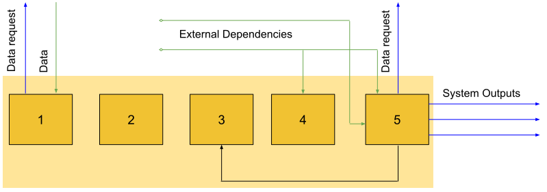
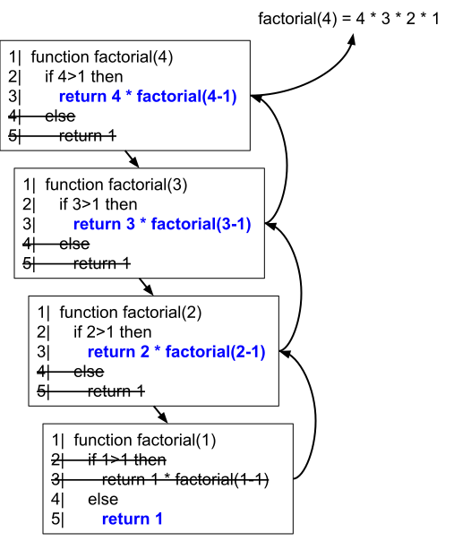

<!DOCTYPE HTML>
<html lang="en" class="light sidebar-visible" dir="ltr">
    <head>
        <!-- Book generated using mdBook -->
        <meta charset="UTF-8">
        <title>Part Two - Illustrating - English Study Notes</title>


        <!-- Custom HTML head -->

        <meta name="description" content="Lambert 的英语学习笔记：Technical Writing / Word Power Made Easy。">
        <meta name="viewport" content="width=device-width, initial-scale=1">
        <meta name="theme-color" content="#ffffff">

        <link rel="icon" href="../favicon.svg">
        <link rel="shortcut icon" href="../favicon.png">
        <link rel="stylesheet" href="../css/variables.css">
        <link rel="stylesheet" href="../css/general.css">
        <link rel="stylesheet" href="../css/chrome.css">
        <link rel="stylesheet" href="../css/print.css" media="print">

        <!-- Fonts -->
        <link rel="stylesheet" href="../FontAwesome/css/font-awesome.css">
        <link rel="stylesheet" href="../fonts/fonts.css">

        <!-- Highlight.js Stylesheets -->
        <link rel="stylesheet" id="highlight-css" href="../highlight.css">
        <link rel="stylesheet" id="tomorrow-night-css" href="../tomorrow-night.css">
        <link rel="stylesheet" id="ayu-highlight-css" href="../ayu-highlight.css">

        <!-- Custom theme stylesheets -->


        <!-- Provide site root and default themes to javascript -->
        <script>
            const path_to_root = "../";
            const default_light_theme = "light";
            const default_dark_theme = "navy";
            window.path_to_searchindex_js = "../searchindex.js";
        </script>
        <!-- Start loading toc.js asap -->
        <script src="../toc.js"></script>
    </head>
    <body>
    <div id="mdbook-help-container">
        <div id="mdbook-help-popup">
            <h2 class="mdbook-help-title">Keyboard shortcuts</h2>
            <div>
                <p>Press <kbd>←</kbd> or <kbd>→</kbd> to navigate between chapters</p>
                <p>Press <kbd>S</kbd> or <kbd>/</kbd> to search in the book</p>
                <p>Press <kbd>?</kbd> to show this help</p>
                <p>Press <kbd>Esc</kbd> to hide this help</p>
            </div>
        </div>
    </div>
    <div id="body-container">
        <!-- Work around some values being stored in localStorage wrapped in quotes -->
        <script>
            try {
                let theme = localStorage.getItem('mdbook-theme');
                let sidebar = localStorage.getItem('mdbook-sidebar');

                if (theme.startsWith('"') && theme.endsWith('"')) {
                    localStorage.setItem('mdbook-theme', theme.slice(1, theme.length - 1));
                }

                if (sidebar.startsWith('"') && sidebar.endsWith('"')) {
                    localStorage.setItem('mdbook-sidebar', sidebar.slice(1, sidebar.length - 1));
                }
            } catch (e) { }
        </script>

        <!-- Set the theme before any content is loaded, prevents flash -->
        <script>
            const default_theme = window.matchMedia("(prefers-color-scheme: dark)").matches ? default_dark_theme : default_light_theme;
            let theme;
            try { theme = localStorage.getItem('mdbook-theme'); } catch(e) { }
            if (theme === null || theme === undefined) { theme = default_theme; }
            const html = document.documentElement;
            html.classList.remove('light')
            html.classList.add(theme);
            html.classList.add("js");
        </script>

        <input type="checkbox" id="sidebar-toggle-anchor" class="hidden">

        <!-- Hide / unhide sidebar before it is displayed -->
        <script>
            let sidebar = null;
            const sidebar_toggle = document.getElementById("sidebar-toggle-anchor");
            if (document.body.clientWidth >= 1080) {
                try { sidebar = localStorage.getItem('mdbook-sidebar'); } catch(e) { }
                sidebar = sidebar || 'visible';
            } else {
                sidebar = 'hidden';
                sidebar_toggle.checked = false;
            }
            if (sidebar === 'visible') {
                sidebar_toggle.checked = true;
            } else {
                html.classList.remove('sidebar-visible');
            }
        </script>

        <nav id="sidebar" class="sidebar" aria-label="Table of contents">
            <!-- populated by js -->
            <mdbook-sidebar-scrollbox class="sidebar-scrollbox"></mdbook-sidebar-scrollbox>
            <noscript>
                <iframe class="sidebar-iframe-outer" src="../toc.html"></iframe>
            </noscript>
            <div id="sidebar-resize-handle" class="sidebar-resize-handle">
                <div class="sidebar-resize-indicator"></div>
            </div>
        </nav>

        <div id="page-wrapper" class="page-wrapper">

            <div class="page">
                <div id="menu-bar-hover-placeholder"></div>
                <div id="menu-bar" class="menu-bar sticky">
                    <div class="left-buttons">
                        <label id="sidebar-toggle" class="icon-button" for="sidebar-toggle-anchor" title="Toggle Table of Contents" aria-label="Toggle Table of Contents" aria-controls="sidebar">
                            <i class="fa fa-bars"></i>
                        </label>
                        <button id="theme-toggle" class="icon-button" type="button" title="Change theme" aria-label="Change theme" aria-haspopup="true" aria-expanded="false" aria-controls="theme-list">
                            <i class="fa fa-paint-brush"></i>
                        </button>
                        <ul id="theme-list" class="theme-popup" aria-label="Themes" role="menu">
                            <li role="none"><button role="menuitem" class="theme" id="default_theme">Auto</button></li>
                            <li role="none"><button role="menuitem" class="theme" id="light">Light</button></li>
                            <li role="none"><button role="menuitem" class="theme" id="rust">Rust</button></li>
                            <li role="none"><button role="menuitem" class="theme" id="coal">Coal</button></li>
                            <li role="none"><button role="menuitem" class="theme" id="navy">Navy</button></li>
                            <li role="none"><button role="menuitem" class="theme" id="ayu">Ayu</button></li>
                        </ul>
                        <button id="search-toggle" class="icon-button" type="button" title="Search (`/`)" aria-label="Toggle Searchbar" aria-expanded="false" aria-keyshortcuts="/ s" aria-controls="searchbar">
                            <i class="fa fa-search"></i>
                        </button>
                    </div>

                    <h1 class="menu-title">English Study Notes</h1>

                    <div class="right-buttons">
                        <a href="../print.html" title="Print this book" aria-label="Print this book">
                            <i id="print-button" class="fa fa-print"></i>
                        </a>
                        <a href="https://english.lambert.wang" title="Git repository" aria-label="Git repository">
                            <i id="git-repository-button" class="fa fa-github"></i>
                        </a>

                    </div>
                </div>

                <div id="search-wrapper" class="hidden">
                    <form id="searchbar-outer" class="searchbar-outer">
                        <div class="search-wrapper">
                            <input type="search" id="searchbar" name="searchbar" placeholder="Search this book ..." aria-controls="searchresults-outer" aria-describedby="searchresults-header">
                            <div class="spinner-wrapper">
                                <i class="fa fa-spinner fa-spin"></i>
                            </div>
                        </div>
                    </form>
                    <div id="searchresults-outer" class="searchresults-outer hidden">
                        <div id="searchresults-header" class="searchresults-header"></div>
                        <ul id="searchresults">
                        </ul>
                    </div>
                </div>

                <!-- Apply ARIA attributes after the sidebar and the sidebar toggle button are added to the DOM -->
                <script>
                    document.getElementById('sidebar-toggle').setAttribute('aria-expanded', sidebar === 'visible');
                    document.getElementById('sidebar').setAttribute('aria-hidden', sidebar !== 'visible');
                    Array.from(document.querySelectorAll('#sidebar a')).forEach(function(link) {
                        link.setAttribute('tabIndex', sidebar === 'visible' ? 0 : -1);
                    });
                </script>

                <div id="content" class="content">
                    <main>
                        <hr />
<h2>title: "Illustrating"
status: public
date: 2026-11-22</h2>
<h1 id="illustrating"><a class="header" href="#illustrating">Illustrating</a></h1>
<p>还记得老师给你布置的大阅读作业吗？你翻阅教科书中的对应章节，拼命地查找...图片！看插图比阅读文字有趣得多。事实上，绝大多数成年人在阅读技术材料方面仍是小孩子 -- 仍然渴望图片而不是文字。</p>
<p></p>
<!-- TODO(verify: images/book_readers.jpg has no source file anywhere (also 404 on the old gitbook site); owner to supply the asset or drop the figure) -->
<p><a href="https://commons.wikimedia.org/wiki/File:Nepalese_Children.JPG">Nirmal Dulal [CC BY-SA 4.0 (https://creativecommons.org/licenses/by-sa/4.0)]</a></p>
<p>根据<a href="https://www.sciencedirect.com/science/article/pii/S0747563212000921">Sung 和 Mayer (2012)</a>的研究报告，在文档中插图 -无论质量好坏- 会增加读者对文档的好感。然而，只有指导性的图片才会帮助读者学习。一图胜千言，本单元建议了一些为文档配图的技巧。</p>
<h2 id="先确定插图标题"><a class="header" href="#先确定插图标题">先确定插图标题</a></h2>
<p>在对文档进行插图前，先确定插图标题总是有用的。之后，再创建最适配标题的插图。这个过程可以确保插图有达到其目的。</p>
<p>好的插图标题有以下特征：</p>
<ul>
<li><strong>简洁</strong>。一般来说，插图标题仅包含几个单词。</li>
<li><strong>解释要点</strong>。看完这个图后，读者需要记住什么？</li>
<li><strong>聚焦</strong>读者注意力。当图片或者图标信息很多时，聚焦尤其重要。</li>
</ul>
<h3 id="练习"><a class="header" href="#练习">练习</a></h3>
<p>假设你的目标读者是计算机科学专业本科生，正在上“数据结构简介”课程。如下三张图片是课程配图，使用同样的标题。哪张图片是标题的最佳适配？</p>
<p></p>
<p></p>
<p></p>
<p>%accordion%点击展开参考答案%accordion%</p>
<ul>
<li>Figure A是错的。虽然图片很漂亮，但是没有提供任何信息。这个链表还错误地将单向链表编程双向。</li>
<li>Figure B还好。虽然该插图帮助学生了解第一个节点链接到第二个节点，第二个节点链接到第三个节点，以此类推。但是图示上仅体现了链表指针，并没有呈现标题中提及的节点内容。</li>
<li>Figure C是标题的最佳适配。图示清晰地呈现了链表节点内容和链表指针。</li>
</ul>
<p>%/accordion%</p>
<h2 id="限制单个图片上的信息量"><a class="header" href="#限制单个图片上的信息量">限制单个图片上的信息量</a></h2>
<p>一副精美画作可以逐层揭示更深层次的意义，人们在世界各地艺术博物馆花很多钱来研究这些大作。</p>
<p></p>
<p>相反，像下图一样过于复杂的技术文档插图，会让读者望而却步。</p>
<p></p>
<p>就像你应该避免使用过长的句子一样，请避免视觉上的重复。根据经验，不要将一个段落的信息量放到单张图片内。具体地讲，应该避免使用需要五个列表项才能讲清楚的图片。</p>
<p>将复杂的系统组织成子系统，可以帮你将视觉上的混乱精简得更有条理。如下图所示：</p>
<p></p>
<p>呈现系统整体的图示后，插图介绍每一个子系统的细节。例如：</p>
<p></p>
<h2 id="聚焦读者的注意力"><a class="header" href="#聚焦读者的注意力">聚焦读者的注意力</a></h2>
<p>当在屏幕上看到下图一样的图片时，读者很难确定图片要说明什么。</p>
<p></p>
<p>如果加上像下图红色椭圆一样的视觉提示，读者则很容易聚焦到图片真正要呈现的内容。</p>
<p></p>
<p>另外一种聚焦读者注意力的方式是在图片上做标注。图片或者线条上的标注，可以帮我们的眼睛找到正确的“着陆点”。标注往往比大段对图片的文字说明更好。这是因为的标注将读者的注意力聚焦到图片最重要的信息，这样你就可以直接解释你的重点，而不用花时间描述你在讲的是图片的哪个地方。</p>
<p>例如，下图中的箭头和标注让读者可以快速的聚焦到重点。</p>
<p></p>
<h2 id="插图阐述即是重新阐述"><a class="header" href="#插图阐述即是重新阐述">插图阐述即是重新阐述</a></h2>
<p>极少数第一版文档草稿的插图是足够好的。修改你的插图，让其内容更清晰。在修改时，问自己以下问题：</p>
<ul>
<li>我该怎么用简化插图？</li>
<li>该将插图拆分为两个或更多更易理解的图吗？</li>
<li>图中的文字是否清晰？和背景的对比度是否足够？</li>
<li>图中的重点是什么？</li>
</ul>
<p>例如，下图是<a href="https://wikipedia.org/wiki/Tube_map#History">伦敦地铁交通图</a>。1931 年之前，地铁图是等比例绘制的，即完全按照地上道路和地铁轨道弯曲度一样弯曲。</p>
<p></p>
<p>1931年，Harry Beck主导了一种新的公共交通图，通过移除地面标记和比例尺，从而简化了旧地图。他的设计中，将信息专注在地图使用者真正关心的部分，即怎么从A站到B站。即使1931年的地址大获成功，Beck在随后的多年中仍然不断简化地图从而使其更清晰。现代的伦敦地铁交通图，尽管增加了新的线路和站点，但仍然使用Beck早期的设计。</p>
<h3 id="练习-1"><a class="header" href="#练习-1">练习</a></h3>
<p>参考如下插图：</p>
<p></p>
<p>图中想要表达重点应该是：</p>
<blockquote>
<p>函数的递归是指，函数在返回处调用自身，直到到达停止点。</p>
</blockquote>
<p>上图中是怎样用复杂的呈现让人看不到重点的？如何解决这个问题？</p>
<p>%accordion%点击展开参考答案%accordion%</p>
<p>上图的一些问题包括：</p>
<ul>
<li><strong>问题</strong>：图中的高亮将读者的注意力吸引走，而让人忽略真正的重点。<strong>解决</strong>：慎重选择颜色，避免掩盖重点。</li>
<li><strong>问题</strong>：图片的色彩对比度不够，对低视力或者特定色盲无法阅读。<strong>解决</strong>：移除不必要的颜色，确保颜色复合<a href="https://material.io/design/color/text-legibility.html#legibility-standards">标准色彩对比度建议</a>。</li>
<li><strong>问题</strong>：图片上的双向箭头，让人迷惑于图片上流程真正的走向。<strong>解决</strong>：将双向箭头拆开，一个方向描述函数调用，一个方向描述函数返回</li>
</ul>
<p>%/accordion%</p>
<p>改进后的上图如下：</p>
<p></p>
<p>上图还有哪些可以修改的地方？</p>
<p>%accordion%点击展开参考答案%accordion%</p>
<p>上图的仍有如下两个问题：</p>
<ul>
<li>图片仍然过于复杂，需要花费超过一个段落来解释这个插图。可以考虑移除一些多余的信息，或者增加一些更明显的标签来简化。</li>
<li>尽管已经将函数调用和函数返回分为不同的箭头，仍可以考虑加上一些标签说明，让读者知道返回值是啥。</li>
</ul>
<p>%/accordion%</p>
<h3 id="画图工具"><a class="header" href="#画图工具">画图工具</a></h3>
<p>画图工具有很多，如下三个画图工具是免费的或者部分免费的：</p>
<ul>
<li><a href="https://drawings.google.com/">Google Drawings</a></li>
<li><a href="https://diagrams.net/">diagrams.net</a></li>
<li><a href="https://www.lucidchart.com/pages/">LucidChart</a></li>
</ul>
<p>当从工具导出图片到文档使用的时候，通常的最佳选择是SVG( <a href="https://wikipedia.org/wiki/Scalable_Vector_Graphics">Scalable Vector Graphics</a>)格式。该格式可以在不影响图片高质量的情况下，被放大或缩小以适配文档大小。</p>
<h2 id="reference"><a class="header" href="#reference">Reference</a></h2>
<p>原文：https://developers.google.com/tech-writing/two/illustrations</p>

                    </main>

                    <nav class="nav-wrapper" aria-label="Page navigation">
                        <!-- Mobile navigation buttons -->
                            <a rel="prev" href="../TechnicalWriting/Two-OrganizeLargeDoc.html" class="mobile-nav-chapters previous" title="Previous chapter" aria-label="Previous chapter" aria-keyshortcuts="Left">
                                <i class="fa fa-angle-left"></i>
                            </a>

                            <a rel="next prefetch" href="../TechnicalWriting/Two-Sample-code.html" class="mobile-nav-chapters next" title="Next chapter" aria-label="Next chapter" aria-keyshortcuts="Right">
                                <i class="fa fa-angle-right"></i>
                            </a>

                        <div style="clear: both"></div>
                    </nav>
                </div>
            </div>

            <nav class="nav-wide-wrapper" aria-label="Page navigation">
                    <a rel="prev" href="../TechnicalWriting/Two-OrganizeLargeDoc.html" class="nav-chapters previous" title="Previous chapter" aria-label="Previous chapter" aria-keyshortcuts="Left">
                        <i class="fa fa-angle-left"></i>
                    </a>

                    <a rel="next prefetch" href="../TechnicalWriting/Two-Sample-code.html" class="nav-chapters next" title="Next chapter" aria-label="Next chapter" aria-keyshortcuts="Right">
                        <i class="fa fa-angle-right"></i>
                    </a>
            </nav>

        </div>


        <script>
            window.playground_copyable = true;
        </script>


        <script src="../elasticlunr.min.js"></script>
        <script src="../mark.min.js"></script>
        <script src="../searcher.js"></script>

        <script src="../clipboard.min.js"></script>
        <script src="../highlight.js"></script>
        <script src="../book.js"></script>

        <!-- Custom JS scripts -->


    </div>
    </body>
</html>
